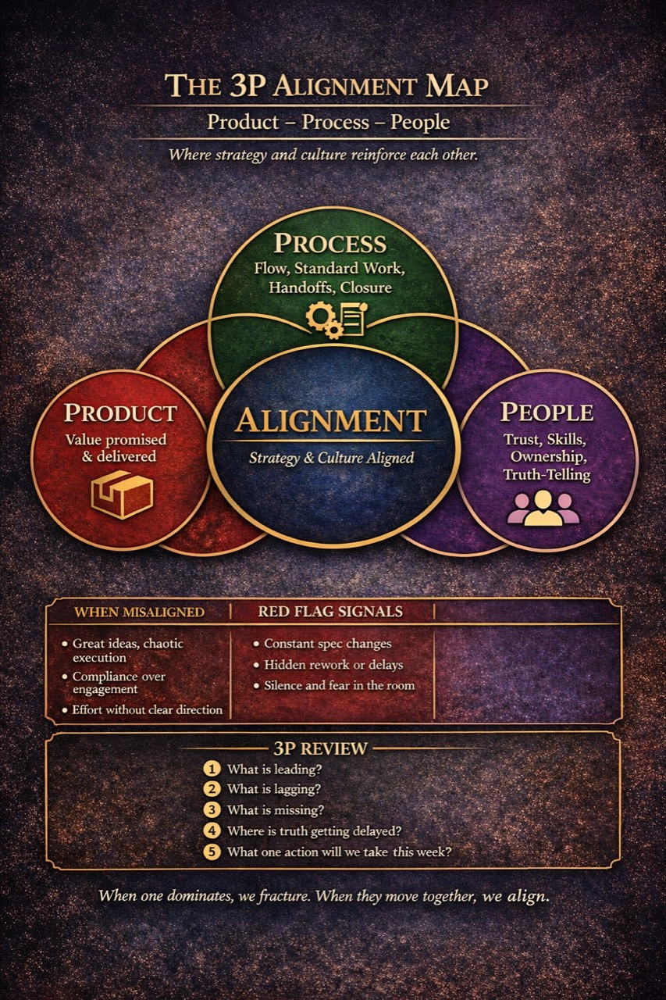
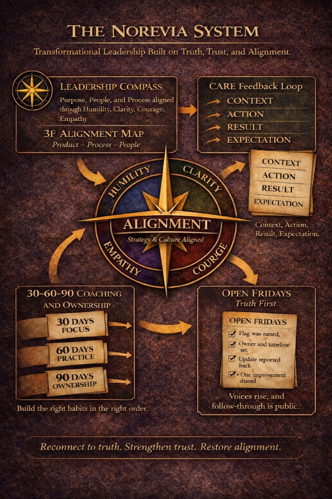
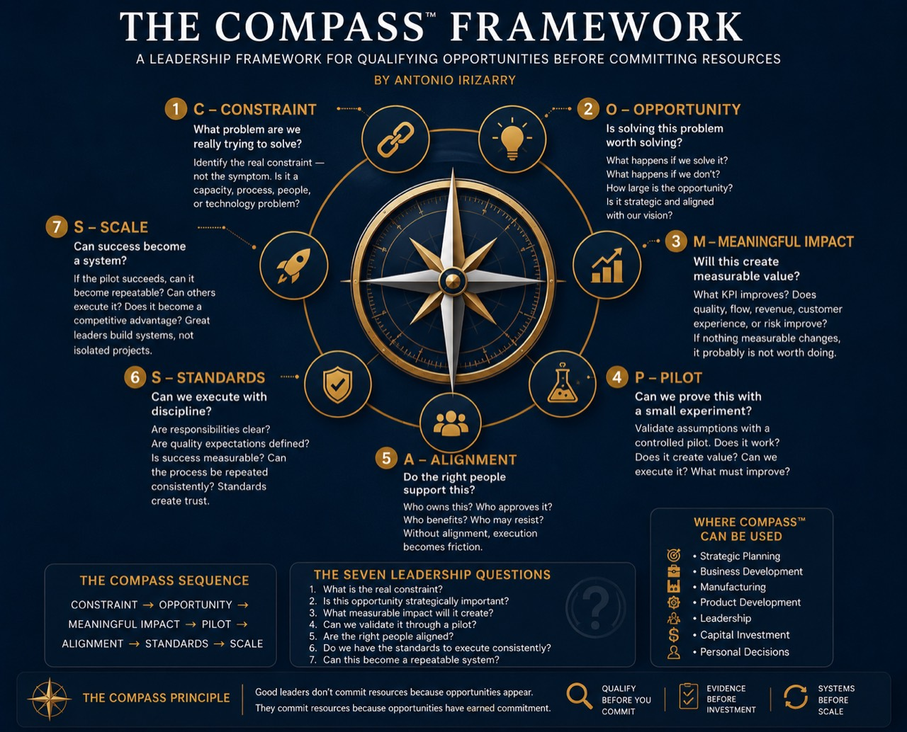
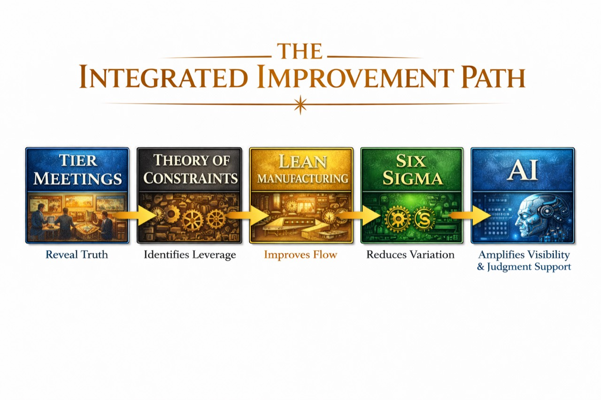
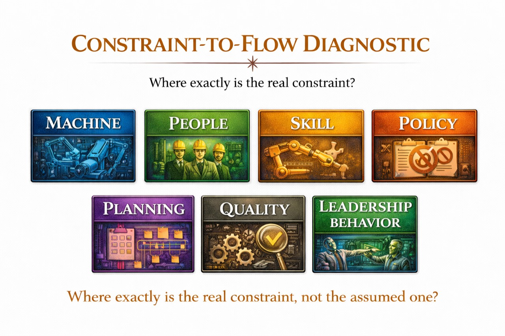
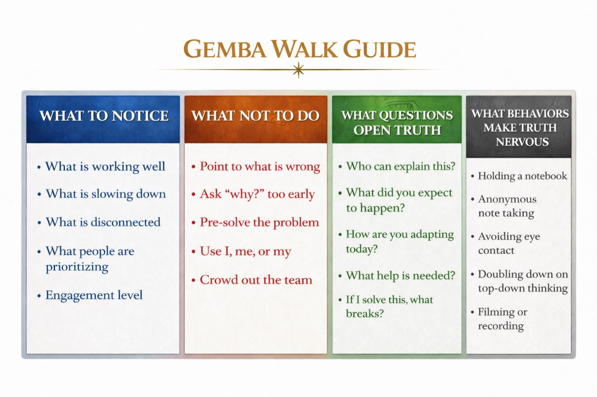
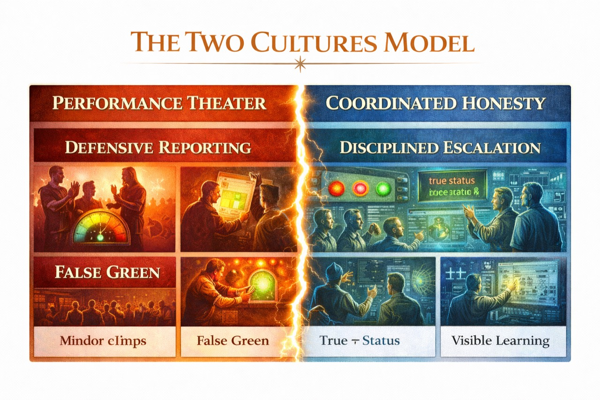

The 3P Alignment Map
Product, process, and people reinforcing each other.

The Norevia System
A connected system for truth, trust, ownership, and follow-through.

Decision framework
The COMPASS™ Framework
A structured method for evaluating opportunities before committing
resources. Move from Constraint and Opportunity through Meaningful
Impact, Pilot, Alignment, Standards, and Scale.
Seven disciplined questions for deciding what deserves attention,
investment, and scale.
Explore the COMPASS Framework

The Integrated Improvement Path
Meetings reveal truth, constraints identify leverage, and AI amplifies visibility.

Constraint-to-Flow Diagnostic
A quick way to ask where the real constraint sits, not the assumed one.

Gemba Walk Guide
What to notice, what not to do, and what questions open truth.

The Two Cultures Model
Move from performance theater to coordinated honesty.